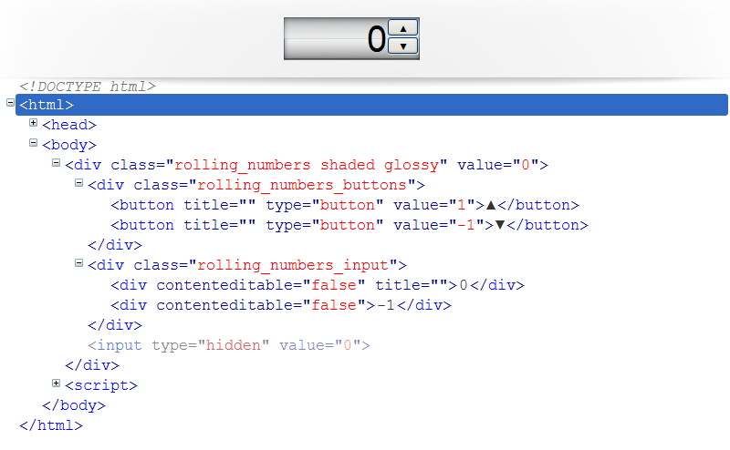

The Rolling Numbers Input can be made from a jQuery selection of only < input type='number' > or from a jQuery selection of containers like DIV and SPAN.
You can also set the options of this tool through a javascript object.
The creation syntax is this below:
< div class='sample'>< /div>
< script>
var settings={max:10, editable:true};
var a=setRollingNumbers($(".sample"), settings);
< /script>
The options available for this tools are:
| Type | Name | Default | Description |
|---|---|---|---|
| Number | value | 0 | the starting value |
| Number | step | 1 | the minimum increment |
| Number | max | positive infinity | the top limit |
| Number | min | negative infinity | the down limit |
| Number | decimal | 0 | the numbers of digits after the decimal point |
| Boolean | editable | false | allow the interaction via keyboard |
| Boolean | disabled | false | deny the user interaction |
| Boolean | draggable | true | allow the interaction via pointer |
| Boolean | rolling | true | allow spatial movement of input fields and background |
| Boolean | toggle_buttons | true | display the buttons |
| Boolean | mousewheel_invert | false | invert the effect of the mouse wheel action |
This tool is a DIV containing 2 other DIVs, respectively containing 2 BUTTONs and 2 DIVs, and an INPUT type hidden. 
If you would like to edit the color, font, or style the Rolling Numbers Input, you have to style the father element, the one which has the class rolling_numbers.
I strongly suggest to put a tileable background image, in this way the rolling effect will be more evident to the user.
If you find that your new style is not overriding, it is most likely because of a specificity problem. Scroll down in your CSS file and make sure that there isn't a similar style that has more weight.
So, to ensure that your new styles are applied, make sure that they carry enough "weight" and that there isn't a style lower in the CSS file that is being applied after yours.
The INPUT type hidden was introduced to support the submit through FORM.
This tool uses one CSS file. The file has the following structure:
/* === Container === */ some code /* === Buttons === */ some code /* === Numbers === */ some code
If you would like to edit a specific part of the tool, simply find the appropriate label in the CSS file, and then scroll down until you find the style that needs to be edited.
The pseudo-elements :before and :after improve the graphics of this tool, you can toggle them using the classes shaded and glossy, the respective effects render only if these classes are associated with the class rolling_numbers, so:
div class='rolling_numbers shaded glossy'
This div will show the gradients, but:
div class='shaded glossy'
This one will not display the gradients.
Warning: in IE these graphical enhacements don't take effect.
This tool uses three Javascript files.
function modifyValue(source, increment, duration){
var source_root=source.parent();
var l_height=source_root.innerHeight();
var step_value=fields.step;
var max=fields.max, min=fields.min;
var decim=fields.decimal;
var currValue=Number(source_root.val()), delta;
if(currValue+increment*step_value>max && increment>=0.2)
delta=parseInt((max-currValue)/step_value);
else if(currValue+increment*step_value < min && increment <= -0.2)
delta=parseInt((min-currValue)/step_value);
else
delta=increment;
if(delta!=0){
var upBtn=source.siblings('.rolling_numbers_buttons').children(':first');
var downBtn=upBtn.next();
var turns=0;
var direction, inc_element;
if(delta>0){
direction=1;
inc_element=source.children(':first');
}
else{
direction=-1;
inc_element=source.children(':last');
}
if(Math.abs(delta)>=1){
upBtn.prop('disabled', false);
downBtn.prop('disabled', false);
}
if(duration>0 && fields.rolling){
var position;
source.stop();
source.animate({defaultValue:"+="+delta*l_height},{
duration:duration*delta/increment,
easing:'easeOutCubic',
step: function(now, fx){
var dummy=now.toFixed(decim);
position=dummy-l_height*turns;
var bound_check=false;
if(position>0 && direction==1)
bound_check=true;
else if(position <= -l_height && direction==-1)
bound_check=true;
else if(position <= -l_height/2)
setActiveInput(source.children(':last'));
else if(position>-l_height/2)
setActiveInput(source.children(':first'));
var sum=Number(inc_element.text())+direction*step_value;
if(bound_check && !(sum > max || sum < min)){
turns+=direction;
position-=direction*l_height;
inc_element.text(function(a,old){
var sibling=inc_element.siblings();
sibling.text(old);
setActiveInput(sibling);
return sum.toFixed(decim);
});
}
source.css('top',(position)+'px');
source_root.css('backgroundPosition','0px '+(position)+'px');
},
complete: function(){
normalize(source);
}
});
}
[ecc. ecc.]
source.queue(function(){
source.prop('defaultValue', function(a, old){
if(isNaN(old))
old=0;
return old-turns*l_height;
});
var active_input=source.children('[title]');
var finalValue=active_input.text();
source_root.attr('value', finalValue);
source_root.children(':last').attr('value', finalValue);
if(! fields.disabled){
upBtn.prop('disabled', (finalValue>=max));
downBtn.prop('disabled', (finalValue <= min));
}
source.dequeue();
});
}
else clearInterval(intervalID);
}
This function makes possible the movement of numbers and background, at first it calculates the number of increments (or decrements) to do in consideration of the min and max limits specified by the user. Then it makes an animation increasing a custom DOM parameter defaultValue.
A periodical formula calculates the new position for numbers and background.
If a new position exceeds the vertical boundaries, the numbers are incremented (or decremented) by one step and also the position is properly resetted through the periodical formula.
If a Number covers more than 50% of the Rolling Numbers Input visible space, the function signs it as active, calling the function setActiveInput().
The ecc.ecc. part is referred to the procedure running when the resulting increment has to appear immediately, without adopting the animation, so the parameter duration is equal to 0. This section has an algorithm similar to the animation one, just more simplified beacause there is no need to consider spatial motion.
When the animation finishes, this function updates the propers HTML attributes, resets the DOM parameter defaultValue and, if the value has reached one of the limits specified by the user, it disables the correct button.
Another important part in the script is the public interface:
disable: function(disab){
if(disab==null) return Boolean(fields.disabled);
else setDisabled(disab);
},
draggable: function(drag){
if(drag==null) return Boolean(fields.draggable);
else fields.draggable=drag;
},
editable: function(edit){
if(edit==null) return Boolean(fields.editable);
else setEditable(edit);
},
[ecc.ecc.]
}
The public interface allows the developer to get and set some properties and informations for this tool. In many public functions if you specify an argument they set the property with it, or else without argument, they return the current property value.
Here below a list of all the methods of the public interface:
| Name | Description |
|---|---|
| disable | Set/get the disabled option |
| draggable | Set/get the draggable option |
| editable | Set/get the editable option |
| limits | Set/get the max and min options |
| rolling | Set/get the rolling option |
| toggleButtons | Show/hide buttons |
| value | Set the value passing the number of steps and duration in milliseconds/get the current value |
| getActiveInput | Get the element having the current value as text |
| getRoot | Get the root element |
| setHeight | Set the height rescaling the font-size, accept every units |
| setWidth | set the width, accept every units |
| setLook | Set the look of the element |
| turnToHtml5 | Convert to < input type="number" /> and destroy this object disabling any further method, accept new settings as argument |
This tool is compatible with all the common browsers, but: